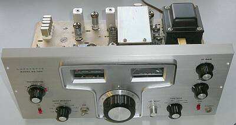
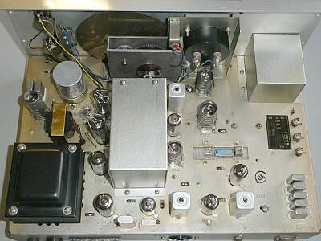
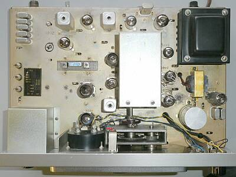
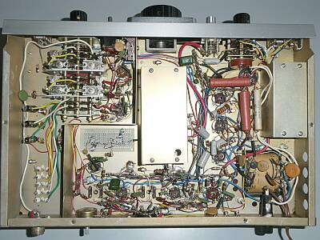
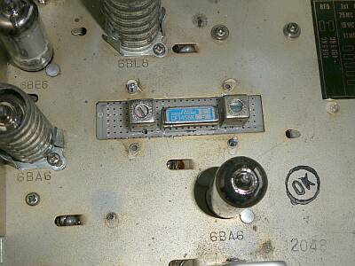
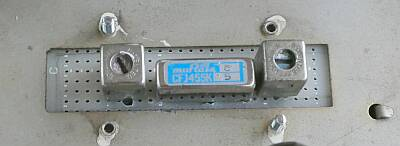
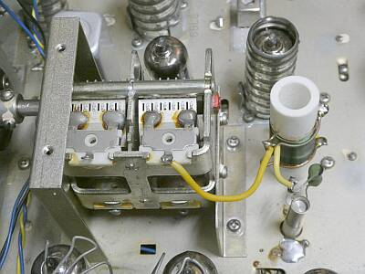
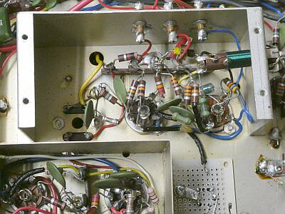
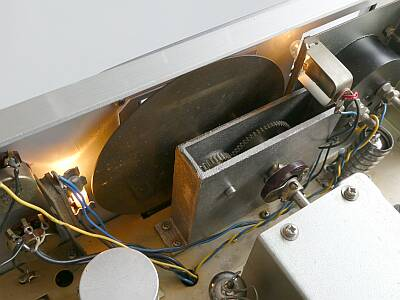

 |
フロントパネル側よりシャーシ上面を見る |
 |
リア側からシャーシ上面を見る
信号は、右上から下へ
そこから左へと、処理されます
なぜか１００ＫＨｚマーカーが検波段の傍に
プロダクト検波の真空管の半分を使うためですが、すぐ近くにＡＮＴコネクタが配されています
電源トランスのところから上に向かってＡＦ段です
ＶＦＯシールドケースの回りを真空管で固める…恒温槽作戦でしょうか？！ |
 |
シャーシ上面の様子、真上からです
左上のクリスタル群は、バンド切替用
右下の２個のクリスタルはＢＦＯ用です
ＶＦＯシールドケースの左上が、発振用６ＢＡ６／クラップ回路です
その下が、２ｎｄ-Ｍｉｘ ６ＢＥ６です
ＶＦＯの安定度はイマイチで、きちんと合わせて受信するには、常に補正が必要そうな状態です（しっかり温まれば改善があるかも：上記作戦参照） |
 |
シャーシ下の様子
中央のシールドはＶＦＯ
その左横に見えているのが、今回組み入れたフィルタ基板／裏面です
右のシールドは、ＢＦＯ部です
ＶＦＯのリニアリティが、全く良くありません
メインダイヤルスケール（スカート）の０～１００目盛板は、ツマミ本体に固定され動きません
そうなると、周波数読み取りをある程度正確に行うには、リニアリティが良くないと実用になりません |
 |
本来、国際メカニカル・フィルタ（ＡＺタイプ）の採用です
ご多分に漏れず、スポンジの劣化でＮＧになったようで、入手した時点では別のフィルタが付いていました
これまたお馴染みの、ＣＦＪ-４５５Ｋが用意されていたので、これを組み入れることにしました
インピーダンスが２ＫΩとなっていましたので、適当な？マッチングトランス（４５５ＫＨｚＩＦＴ）を用意しました |
 |
置換フィルター部のアップ
ピッチの合わない蛇の目基板に、無理やり取り付けたものを、シャーシ下からビス止め（２本）しました
旧ＪＩＳのビスです |
 |
ＶＦＯ部 シャーシ上のシールドケースを開いたところ
発振コイルは、タイトボビンに巻かれています
温度補償をきちんと行うには、ピストン・トリマに並列に取り付いているＣがその対象になるでしょう
ローカルOMの実験では、このピストン・トリマの温度特性が足を引っ張るという結果も出ていました |
 |
ＶＦＯ部 シャーシ下のシールドカバーを開いたところです
真空管右がVFOオシレータ ６ＢＡ６
左が２ｎｄＭｉｘ ６ＢＥ６
ＶＦＯ周波数ダイヤル０－６００は、そこそこ目盛が周波数に一致しています
問題は、メインダイヤルノブの減速比
おおよそ５回転とちょっとで６００ＫＨｚをカバーします
スカート目盛は０－１００ですから、これでは周波数読み取りにつながりません
単に飾りのスケールです |
 |
ダイヤル・メーター照明
面白いことに、２つ別形状のものが採用されています
右に見えるダイヤルとメータの間に配されているのはＢＡ９の通常のランプ
左に見えるダイヤルの照明ランプは、ヒューズ型のランプです
設計者に、こだわりがあったようです
それよりも、メインダイヤルの表示のほうに、こだわりを・・・です（設計のスタートは、1バンド５００ＫＨｚ展開だったのかもです） |
|